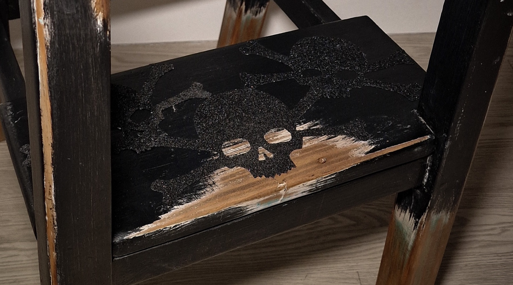

ESCRITURA AUTOMÁTICA
Nullam posuere rhoncus ipsum a aliquet. Integer in est viverra, aliquam dui nec, aliquam lorem. Duis accumsan accumsan sem at sagittis. Nam scelerisque quam id risus commodo ultrices. In ornare urna metus, ut ornare diam convallis eget. Nam malesuada, mauris eget blandit venenatis, turpis orci suscipit erat, ut tempor quam mi ac felis. Vivamus sed volutpat lacus. Fusce id tristique ipsum.
FIGURAS
Nullam posuere rhoncus ipsum a aliquet. Integer in est viverra, aliquam dui nec, aliquam lorem. Duis accumsan accumsan sem at sagittis. Nam scelerisque quam id risus commodo ultrices. In ornare urna metus, ut ornare diam convallis eget. Nam malesuada, mauris eget blandit venenatis, turpis orci suscipit erat, ut tempor quam mi ac felis. Vivamus sed volutpat lacus. Fusce id tristique ipsum.
ÁNGEL CABEZABAJO
NUESTRA SEÑORA GANÍMEDES
SANTA RITA CUARZOS
FIGURA BODA
DAMA ABANICO
→ VER MÁS
TÓTEMS
Nullam posuere rhoncus ipsum a aliquet. Integer in est viverra, aliquam dui nec, aliquam lorem. Duis accumsan accumsan sem at sagittis. Nam scelerisque quam id risus commodo ultrices. In ornare urna metus, ut ornare diam convallis eget. Nam malesuada, mauris eget blandit venenatis, turpis orci suscipit erat, ut tempor quam mi ac felis. Vivamus sed volutpat lacus. Fusce id tristique ipsum.
CALAVERA COMADREJA ALADA
CALAVERA HALCÓN
CALAVER JAVALÍ
CÚPULA ABEJA 2
TÓTEM UNICORNIO
→ VER MÁS
CUADROS
Nullam posuere rhoncus ipsum a aliquet. Integer in est viverra, aliquam dui nec, aliquam lorem. Duis accumsan accumsan sem at sagittis. Nam scelerisque quam id risus commodo ultrices. In ornare urna metus, ut ornare diam convallis eget. Nam malesuada, mauris eget blandit venenatis, turpis orci suscipit erat, ut tempor quam mi ac felis. Vivamus sed volutpat lacus. Fusce id tristique ipsum.
TABLA SKATE GEISHA
CORAZÓN CAJA MÚSICA
SAGRADO CORAZÓN JESÚS
CHICA TATTOO
VIRGEN BELOVED
→ VER MÁS
CONCEPTO
Go On nace como necesidad aplastante de dar orden a esto de aprender a Ser y aaprender a Estar presente, y así poder dejar de parecer, y sobre todo de padecer ese dolor sordo, que todes tenemos y del que desconocemos su procedencia.
En esencia es la búsqueda de una validación propia ante la mirada ajena.
Considero este mundo extremadamente clasificado y clasificante. Echo que creo se dá derivado del miedo que surge de estar desalineados de lo que en esencia somos, sea lo que sea que seamos. De este modo es mas facil ejercer algún tipo de control sea sobre nosotres o nuestro entorno. Esto provoca que en el interior de aquellos por cuyas venas circula de forma mas poderosa la creatividad de lo invisible, surjan fricciones que se expresan en formas de dolores del alma y miedos. A veces los referentes de nuestra realidad interior se escapan a nuestra compresión, siendo imposible encontrar un significante que exprese el significado de aquello que nos aqueja, lo cual nos hace vivir replegados. Es en estos casos, cuando lo ilogico se presenta como la forma mas logica de proceder y solo se encuentra consuelo en el abismo de la ambiguedad que nos permiten las diferentes formas de arte. Las etiquetas caen y buscan nuevos significados y significantes, aprendiendo a ver la luna cuando el sabio la señala en lugar de quedarnos mirando a la punta del dedo.
Go On es solo eso, un intento de dar sentido a lo que se aqueja dentro de mi, de dar un orden y una salida a lo que reside en las sombras de mi inconsciente. Dejando al aire la herida, que es por donde considero puede entrar la luz y alumbrar el camino de vuelta a mi esencia, sea esta de indole mundano o divino. Cuando estes perdido y no sepas por domde empezar, empieza por donde duela, leí en algun lado.
Mi arte, por tanto, se convierte en un atajo para encontrar el camino de retorno a casa, a el amor propio y ajeno. Bebe de lo simbolico y de lo sacral sin por ello atarse a lo que historicamente se le a atribuido como valido o correcto. Gusta de espacios liminales donde la muerte y la vida pueden coexistir. De zonas grises donde sombras y luces pueden bailar y reconocerse como parte de un todo mayor , donde es posible buscar la verdad de reconocerse como entidades eternas e infinitas donde la paz sea con todes nosotres.
Es, en esencia, un intento de dignificar mi existencia tanto como la de aquello que ante mis ojos surge como un reflejo de alguna de mis heridas. Siento especial atraccion por lo virginal, por las deidades, por sucubos e incubos, por fotografias antiguas, por juguetes, por la muerte que todo lo allana, por calaveras, insectos, flora y fauna. Por la naturaleza en la que facilmente puedo reconocer ese impulso de vida y de muerte.
Por lo macabro y oscuro y por lo cuqui y kawaii
Siento especial atraccion por el juego de contrarios que dan movimiento a el mundo, y sobre todo y ante todo siento una enorme atraccion por comprender y descifrar el origen de ese moviento.
De mi puedo decir que tiendo a ser un ser erratico y errante poco disciplinado a veces y altamente sensible de normal. Estudie ilustracion y varios y diferentes cursos relacionados con lo no visible y la simbologia de diferentes culturas. No me decanto por ninguna y dejo que todas se entrelacen mostrandome el camino. Sea este el que sea.
Aprendiz de mucho, maestra de nada, trabajo como tatuadora. Oficio en el que a dia de hoy despues de mas de diez años de experiencia, sigo aprendiendo y descifrando su origen.
Tengo una imperiosa necesidad de dar utilidad a lo consierado basura y de dignificar lo considerado feo, siempe pasandolo por el filtro de mis filias y de mis gustos. Incapaz de centrarme por una sola vertiente artistica, intento permitirme la valentia de dejarme explorar la creacion tal como mi intuicion y mi sentir me van marcando. A veces sale bien, otras no tanto.
Mi impulso de vida es tan grande como el de muerte, es por ello que nace Go On, para animarme a seguir caminando, a no detenerme ante las limitaciones que mi mente proyecta sobre mi o sobre mi manera de habitar el mundo. Es mi forma de dignificar mi existencia tal como intento hacer con todos los seres y enseres que caen en mis manos.
Las palabras clave aqui son DIGNIFICAR, DOLOR Y ELEVAR
Bienvenides a mi mundo y a mi sentir!
Si eres tù, entra…
MUEBLES
Nullam posuere rhoncus ipsum a aliquet. Integer in est viverra, aliquam dui nec, aliquam lorem. Duis accumsan accumsan sem at sagittis. Nam scelerisque quam id risus commodo ultrices. In ornare urna metus, ut ornare diam convallis eget. Nam malesuada, mauris eget blandit venenatis, turpis orci suscipit erat, ut tempor quam mi ac felis. Vivamus sed volutpat lacus. Fusce id tristique ipsum.
BALDA ATÚD
COLGADOR GANCHOS VERDE
MESILLA GRAFFITY
TABURETE ESCALERA 
TABURETE PELO GRIS
→ VER MÁS
JUGUETES
Nullam posuere rhoncus ipsum a aliquet. Integer in est viverra, aliquam dui nec, aliquam lorem. Duis accumsan accumsan sem at sagittis. Nam scelerisque quam id risus commodo ultrices. In ornare urna metus, ut ornare diam convallis eget. Nam malesuada, mauris eget blandit venenatis, turpis orci suscipit erat, ut tempor quam mi ac felis. Vivamus sed volutpat lacus. Fusce id tristique ipsum.
CATRINA DOLL
CHICO CALAVERA

MINI UNICORNIO VERDE
UNICORNIOPOTAMO
VAMPIRA POPPY
→ VER MÁS
CUADROS
Nullam posuere rhoncus ipsum a aliquet. Integer in est viverra, aliquam dui nec, aliquam lorem. Duis accumsan accumsan sem at sagittis. Nam scelerisque quam id risus commodo ultrices. In ornare urna metus, ut ornare diam convallis eget. Nam malesuada, mauris eget blandit venenatis, turpis orci suscipit erat, ut tempor quam mi ac felis. Vivamus sed volutpat lacus. Fusce id tristique ipsum.
GATO I
GATO I
GATO I
GATO I
GATO I
→ VER MÁS
ARTESANÍA
Nullam posuere rhoncus ipsum a aliquet. Integer in est viverra, aliquam dui nec, aliquam lorem. Duis accumsan accumsan sem at sagittis. Nam scelerisque quam id risus commodo ultrices. In ornare urna metus, ut ornare diam convallis eget. Nam malesuada, mauris eget blandit venenatis, turpis orci suscipit erat, ut tempor quam mi ac felis. Vivamus sed volutpat lacus. Fusce id tristique ipsum.
JOYERÍA
LÁMINAS
VELAS
CONTACTAR
cottoncandytattoo@yahoo.es
@cotton_skullcandy
cottoncandyLive?
+34 123 456 789